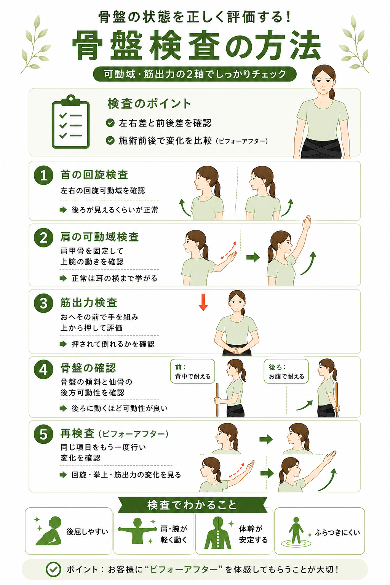
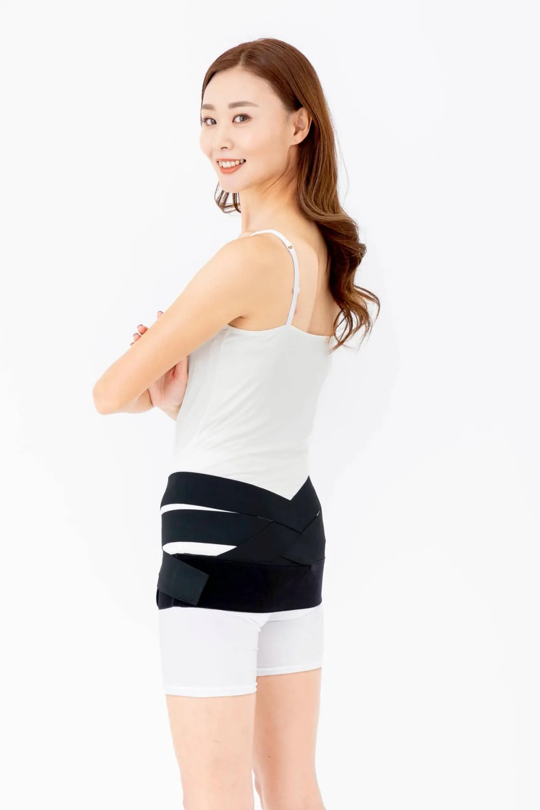
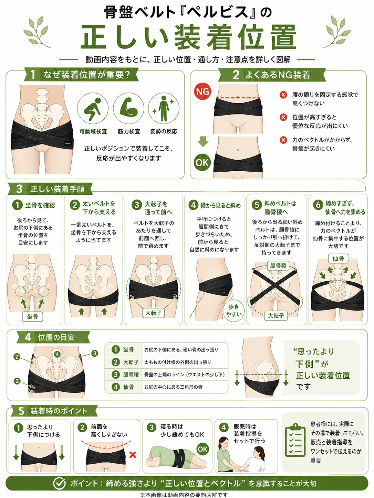
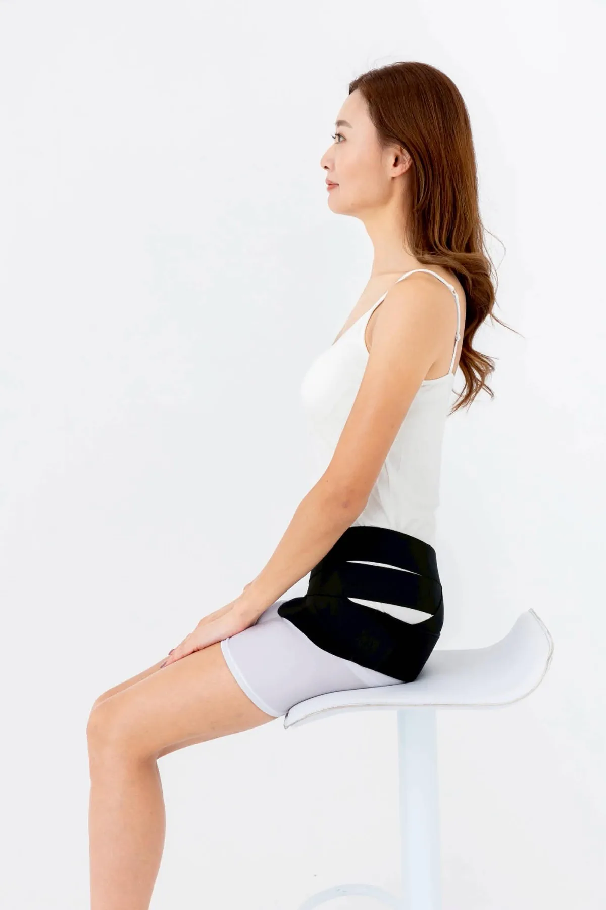
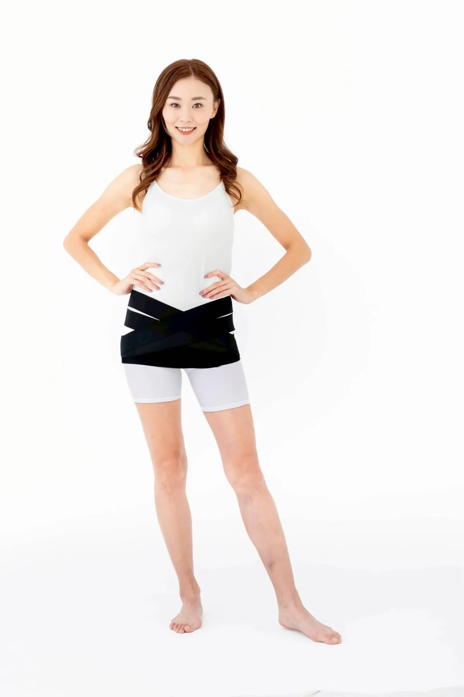
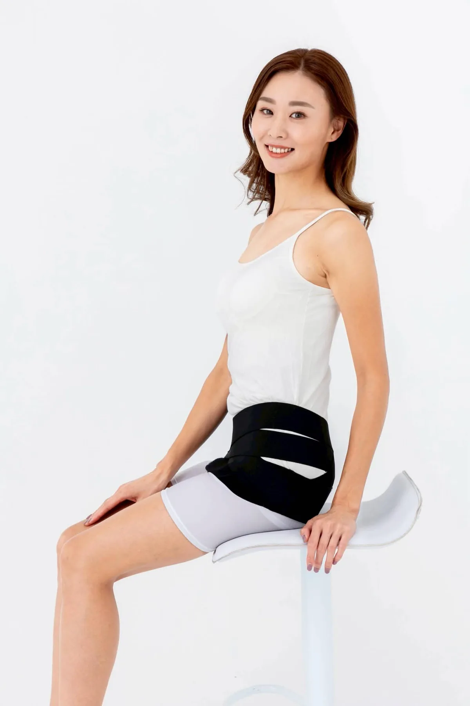
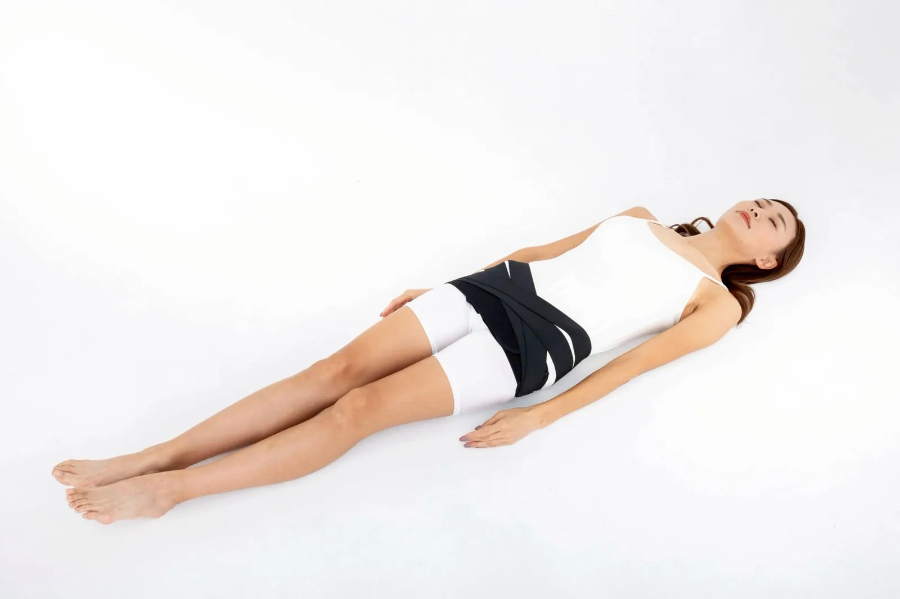
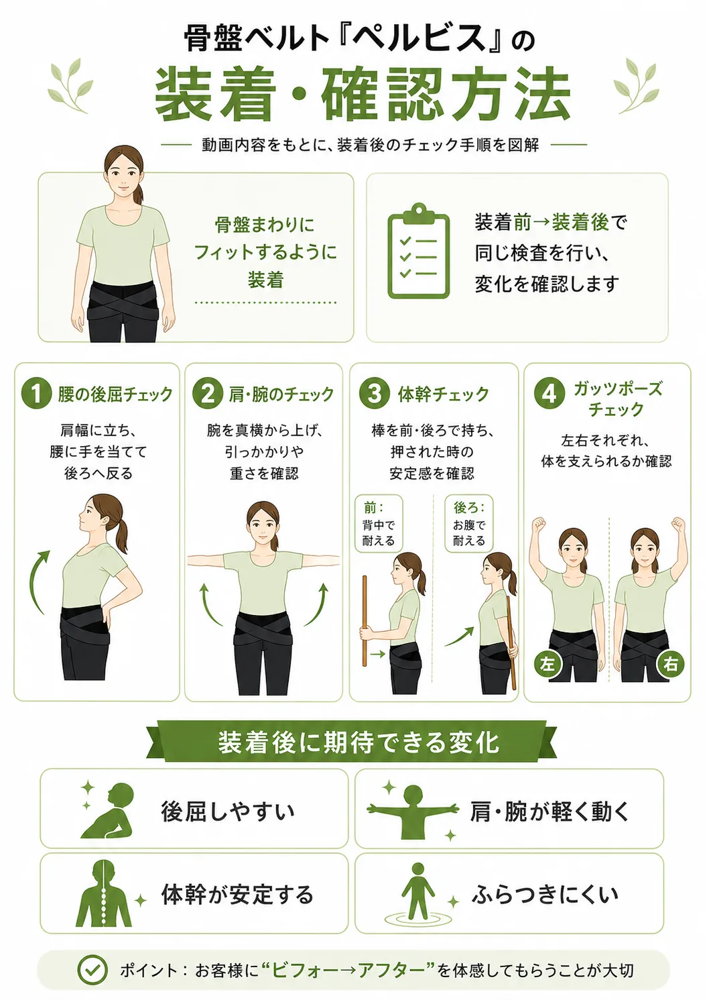
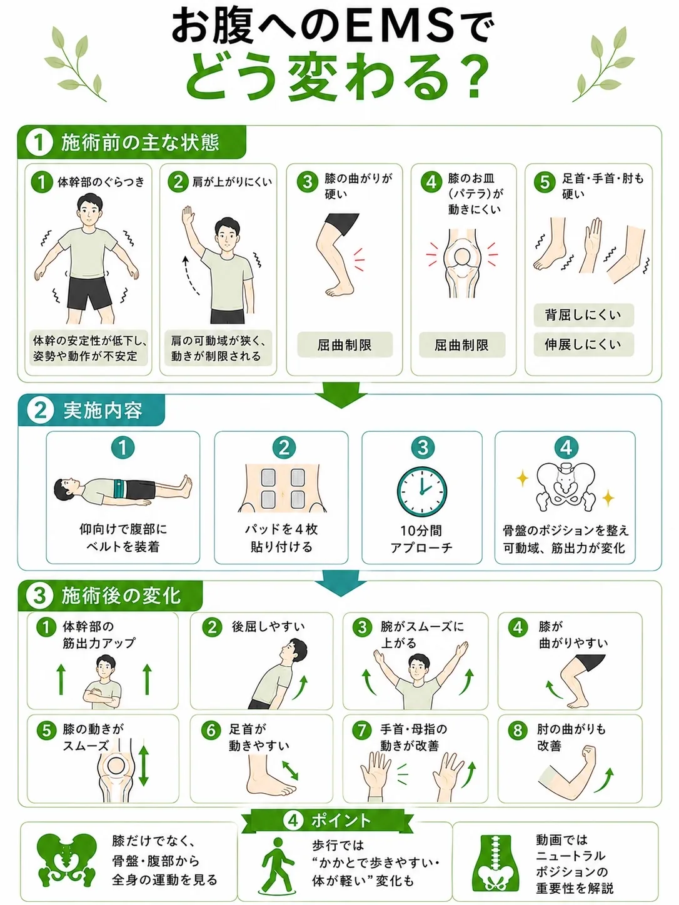

説明の軸
-
現状の負担
骨盤が前傾して反り腰が続くと、
腰・肩・首・股関節に無理な負担が積み重なりやすくなります。 -
立てたときの効果
骨盤がニュートラルに近づくと、姿勢の軸が取りやすくなり、
動作や体幹の安定にもつながります。 -
現場での伝え方
「姿勢の起点は骨盤」
「骨盤が変わると肩や体幹にも影響が出る」
というポイントから、短時間で理解してもらえる流れに。
骨盤を立てるという理論から、
商品情報まで。
必要なものを、このページだけで確認できます。
見たい項目をタップすると、
そのままその箇所へ移動します。
理論
腰だけを締めるのではなく、
骨盤の位置から姿勢全体を整えていく。
現場で説明しやすく、
その場で体感してもらえる順序にまとめています。
現状の負担
骨盤が前傾して反り腰が続くと、
腰・肩・首・股関節に無理な負担が積み重なりやすくなります。
立てたときの効果
骨盤がニュートラルに近づくと、姿勢の軸が取りやすくなり、
動作や体幹の安定にもつながります。
現場での伝え方
「姿勢の起点は骨盤」
「骨盤が変わると肩や体幹にも影響が出る」
というポイントから、短時間で理解してもらえる流れに。
後屈や肩の上がりやすさなど、
その場で変化を感じやすい項目から見せます。
棒を使った検査や荷重テストで、
安定感の違いを体感してもらいます。
骨盤が整うことで、
全身の力の入り方や姿勢保持のしやすさが変わってきます。
美容と健康維持の両面から、
姿勢が整うメリットを伝えやすい構成です。
検査方法
装着前後でどう変わるかを、
その場で体感しやすい検査フロー。
腰・首・肩の可動域と、筋出力を順番に確認していきます。
検査の流れ
特に重要
特に重要なのが③です。
②で体の変化を感じ、
その後ベルトを外した検査で
元通りの動かない体に戻す。
このビフォーアフタービフォーの検査により、
体はすぐに戻ってしまうことや
治療の必要性を、
患者様は実感されます。

検査方法ポスター
腰の回旋・首の可動域・筋出力・骨盤の確認・再検査まで、
ビフォーアフタービフォーの流れを
1枚で確認できる参考図です。
肩幅に足を開き、
手を胸の前でクロスにしたまま
回旋と伸展の動きを見ます。
右の動き、左の動きで
どの部分に引っ掛かりが起こるか、
患者様と一緒に確認しつつ進めましょう。
腰の伸展は腰に手を添えず、
胸の前で手をクロスした状態で行います。
上半身や肩が一緒に動かないよう、
首だけの動きで評価します。
手の甲を上に向け、肘を伸ばした状態で
どの程度関節が動くのかを評価する検査です。
外転と屈曲の検査の2種類。
上腕骨頭のみの動きを見たいので、
セラピストは患者様の後ろから
肩峰を抑えた状態で検査を行う。
肩幅に足を開き、
セラピストが上から下に力を加えた場合に
どれほど力が入るのかを評価する検査です。
ベルトの着用前後での力の入り具合を
実感してもらうものであり、
倒そうとする検査ではありません。
女性のセラピストが対男性患者様での検査を行う場合でも、
ビフォーアフターでの
力の入り方を評価してください。
患者様と直接手が触れ合うのを避けるため、
30cm程度の木の棒を使い、
両端を患者様、真ん中をセラピストが持って
筋力テストを行う方法もございます。
装着前に感じやすいこと
装着後に見せたい変化
説明の締め方
「なぜ骨盤で肩や体幹が変わるのか」という疑問が出たところで、
骨盤が姿勢全体の土台であることと、
この先の理論説明へ自然につなげます。
正しい装着方法
ベルトは「巻く位置」と「ベクトル」が要。
高すぎる位置や締めすぎを避け、
装着後に同じ検査で変化を確認します。

正しい装着位置
ずいぶんと下側に装着するなと思うぐらいが、
ベストポジションです。
＊効果を感じないケースの99%が、
装着位置の間違いです。

正しい装着方法
NG装着例・装着手順・位置の目安・装着時のポイントまで、
「思ったより下側」のベストポジションを、
図解でそのまま共有できます。





装着・確認方法
腰の後屈、肩と腕、体幹、
ガッツポーズでの安定感まで——
装着後に同じ手順で変化を見せる流れを図解しています。
使い分け
どちらが優れているかではなく、
生活スタイルに応じて提案できる構成です。
どちらも「骨盤を立てる」という理論は共通です。
固定的な姿勢で使うのか、動きの多いシーンで使うのか——
使う場面によって選び方が変わります。
例）座ったままの長時間デスクワーク、
長時間運転
例: スポーツ時、立ち仕事、
移動が多い日、
ベルトがズレやすい方の日常使い
デスクワークや睡眠時
運動・長時間
動作によってズレることがある
ズレにくい
初回体感向き
継続使用向き
あまり動かない時
日中・運動時
ベルト
インナーパンツ
ベルト×EMS
骨盤ベルトとEMSを組み合わせることで、
短時間で関節の可動域や筋出力のアップが
実感できる活用方法です。

活用イメージ
肩・膝・足首・手首・肘まで含めて変化を見せることで、
骨盤と腹部へのアプローチが、
全身の動きにどうつながるかを説明しやすくなります。
価格・サイズ・購入
価格、サイズ、使用シーンを確認したうえで、
購入ページへ進むことができます。